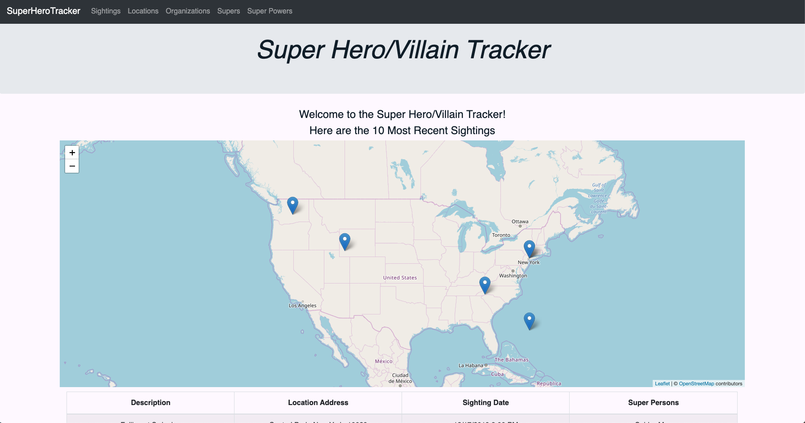
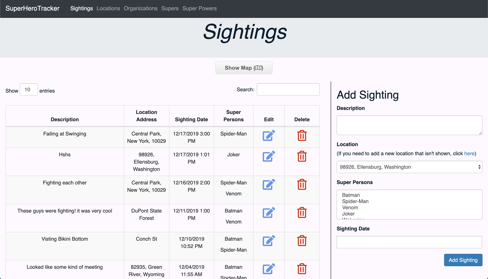
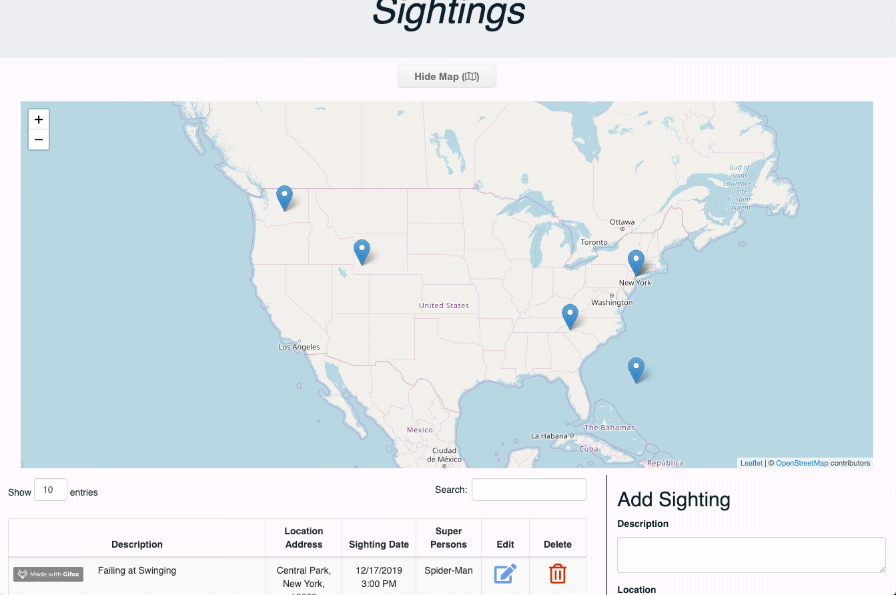

Project: 'SuperTracker'
Documentation/Info
● Technologies Used: Java, Spring Boot, JDBC Template, MySQL, Thymeleaf, Leaflet, JavaScript, CSS/Bootstrap
source code This project is a multi-page dynamic Spring Boot Full Stack Web Application using the MVC design pattern and incorporating a MySQL database. For the front-end I used Thymeleaf which is a modern server-side Java template engine. This allows us to build HTML pages and put some logic in the HTML so we can conditionally render pieces of the page or render lists.It allows users to create, read/view, update, and delete (CRUD) on 5 objects. These objects are Sightings, Characters, Locations (using reverse GeoCoding), Organizations, and Powers
It's an application I made as a project for my coding bootcamp. For this project, I was made project manager, where I directed and oversaw 2 group members throughout the entire application, supplying shells/ layouts for all classes and wireframes for the front-end, all in addition to coding/debugging most of the project. We constantly pushed work through github where I helped with minor merge conflicts. We also frequently met through video calls like google hangouts, where we could share our screen and work out issues together.
The main feature of this application is the ability to keep track of 'super-heroes' and their sightings. It's a playful concept that obviously wouldn't have a use in the real world, but swap the nouns and the concept is resusable. The app allows users to mark sighting location coordinates on a map using a map API, keep track of which organizations a 'Super' is a part of, and their super powers. All data is retained using a MySQL database for data persistance.
One of the key features is seeing all the sightings of a 'Super'. Here you can add a sighting by using the form on the right. You can choose the location and the date/time they were spotted.
Another one of the key features is managing all the 'Supers'. Here you can add a 'Super' by using the form on the right. You can choose the super's powers and organizations from a list. A 'Super' object is made up of:
-
Super Object Class Structure
- Id
- Name
- Description
- Image Path
- isVillain (Y/N)
- List Of: Powers
- List Of: Organizations
Supers have Powers and are a part of Organizations. These are other objects that both have a many to many relationship with Supers.
When on a smaller screen, the table that holds the supers, is modified for better use on a smaller screen. The nav bar also changes to a different layout as a neat bonus. This was done using CSS media queries on different page sizes. You'll also notice there are images tied to supers. This was accomplished using the dropbox API to upload images directly to a dropbox account that I set up for this site. It's pretty cool using this as a free way to store images. This wouldn't cut it in a real world application, but I found it to be resourceful.
The app also allows users to update Powers and Organizations in a similar way to the other objects on their own pages as shown below.
These (CRUD) screens use Data Tables as a cool framework with Bootstrap that allows for pagination of tables. It also allows for a very developer-friendly search feature. Now for the last object, Locations.
This was pretty cool to read up on how to do. I reseached for map API's and came across Leaflet/OpenStreetMap. I added the necessary CDN's to my HTML and was ready to figure it out. The documentation/framework helped me write some JavaScript that was able to create a map object and allow for clicks to return back an address and coordinates. I manipulated this data to populate in my form which seemed like a cool thing.
Using the same API I was able to work out the markers for the sightings on the map. When the map for sightings is open there is a loop that runs through the most recent 20 sightings grabbing their coordinates and placing a marker on each location. If two sightings are in the same location, a spiderfier I found will create a branch of markers displaying more than one at a location.
There was alot more that went into building this project, you can check out the source code here. This links to an earlier build before I added dropbox functionality (final product repo must remain private due to API key) and before I added extra CSS to create the responsive tables. You can also see the DDL for the database and the ERD. If you would like to test out the application, visit it here.